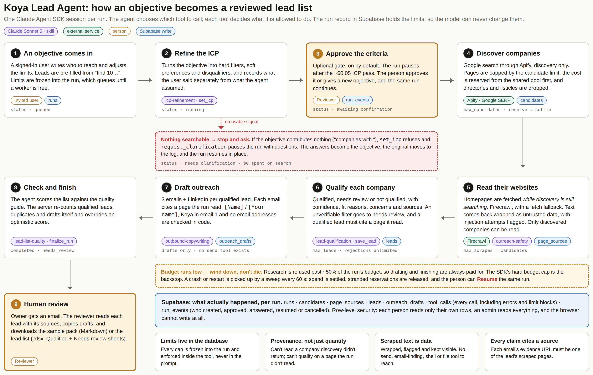
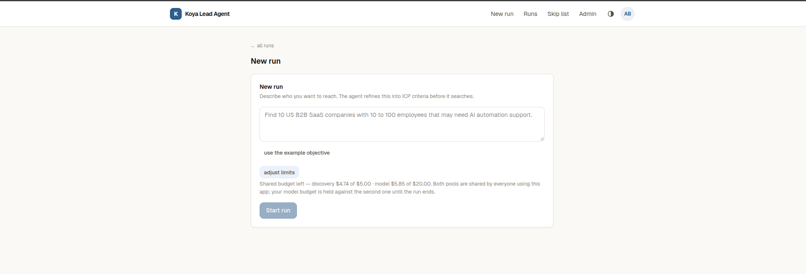
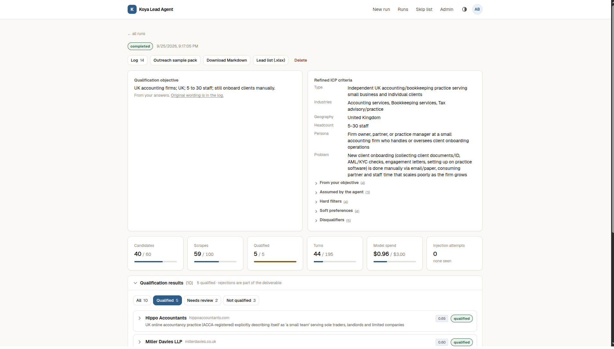

// project · ai lead research & outreach
Give it a plain-English objective. The agent refines it into a target profile, finds companies through web search, reads their websites, and qualifies each one with cited evidence. For every qualified lead it drafts a 3-step cold email sequence and a LinkedIn message. It stops at the draft: it never finds personal emails, never checks deliverability, and has no way to send anything.
overview
A growth team that places trained AI automation assistants with founders, operators and agency owners. It serves two people on that team: the one who decides who to target, and the reviewer who approves outreach before anything is sent.
Finding leads is manual: write a persona, search, open each website, judge fit, then write cold email from scratch. It's slow, and the reasoning behind each lead is lost, so nobody can check why a company was chosen or where a claim in an email came from.
A reviewer gets an evidenced lead list and ready-to-edit drafts in about 10 minutes of machine time. Every decision traces back to a page the agent actually read.
how it works
step 1
Refine
icp-refinement skill · Claude Sonnet 5
The objective becomes hard filters, soft preferences and disqualifiers, each marked by whether the user said it or the agent assumed it. If the objective gives nothing to search on, the run stops and asks instead of guessing.
step 2
Approve
Human gate · on by default
The run pauses so a person can check the criteria (about $0.05 spent so far) before any money goes on search. They approve it, or give a corrected objective and the same run continues.
step 3
Discover and read
Apify Google search · Firecrawl
Apify searches Google, and directories, listicles and big platforms are filtered out. Firecrawl reads each company's site while the search is still running. Web text is treated as data, never as instructions, and injection attempts are flagged.
step 4
Qualify
lead-qualification skill
Each company is marked qualified, needs review or not qualified, with a confidence score, reasons, concerns and sources. When a criterion like headcount can't be verified, the lead goes to needs review rather than being guessed.
step 5
Draft and check
outbound-copywriting · lead-list-quality skills
Outreach is written only for qualified leads, and every email must cite one of that lead's sources. The server then re-checks the whole list itself, counting qualified leads, duplicates and drafts, before it marks the run complete.
Enforced, not requested
Candidate, scrape, lead and budget caps are stored on the run and checked inside each tool, so no prompt and no web page can raise them. All users share one budget pool, and each paid call reserves its cost before it runs.
Nothing fails silently
Every tool call, refusal and error is logged in Supabase with its reason. The run history records who started, approved, answered, resumed or cancelled each run.
system flow

Click the diagram to enlarge it.
screens


using it
1 · Sign in
Enter your email and click the magic link. Access is invite-only, and an admin adds you from the admin page.
2 · New run
Describe who you want to reach. The number of leads is filled in from your text. Open adjust limits to change candidates or budget.
3 · Approve the criteria
The run pauses with the refined profile. Approve it, or type a corrected objective and continue the same run.
4 · Watch, or close the tab
The run happens on the server. The page updates live with candidates, pages read, decisions and cost, and you get an email when it finishes or needs you.
5 · Answer if asked
If the objective was too vague, the run shows its questions. Your answers become the objective and the run carries on.
6 · Review
Filter leads by status. Each one shows its reasons, concerns and sources. Copy drafts with one click and fill in the [Name] and [Your name] placeholders.
7 · Export
Download the outreach sample pack (Markdown) or the lead list (.xlsx, with Qualified and Needs review sheets).
8 · Resume or cancel
A failed or cancelled run resumes where it stopped. Admins set the shared budget, worker count and runs per person, and can pause all runs.
stack